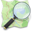

OpenStreetMap

OpenStreetMap  ist ein Projekt mit dem Ziel, eine digitale Karte der Welt zu erschaffen, die jeder frei verwenden darf. Hierzu werden von zahlreichen Mitwirkenden weltweit Kartendaten wie Straßen, Eisenbahnen, Flüsse, Häuser, Wälder und viele weitere Informationen gesammelt. Ganz wichtig dabei ist, dass die Kartendaten nicht von anderen Karten kopiert werden, sondern dass die Nutzer die Daten selber erfassen, welche dann unter die freie Creative-Commons-Lizenz (BY-SA) gestellt werden. Die Erfassung der Daten geschieht in erster Linie mit Hilfe von GPS-Empfängern, aber auch unter Zuhilfenahme von Satellitenbildern, für die eine entsprechende Genehmigung vorliegt, z.B. Landsat oder Yahoo. Ein Vergleich anhand einer übereinander gelegten Karte zeigt, dass OpenStreetMap in punkto Genauigkeit und Detailwiedergabe den Vergleich mit kommerziellen Diensten in keiner Weise scheuen muss (siehe auch Comparison of web map services).
ist ein Projekt mit dem Ziel, eine digitale Karte der Welt zu erschaffen, die jeder frei verwenden darf. Hierzu werden von zahlreichen Mitwirkenden weltweit Kartendaten wie Straßen, Eisenbahnen, Flüsse, Häuser, Wälder und viele weitere Informationen gesammelt. Ganz wichtig dabei ist, dass die Kartendaten nicht von anderen Karten kopiert werden, sondern dass die Nutzer die Daten selber erfassen, welche dann unter die freie Creative-Commons-Lizenz (BY-SA) gestellt werden. Die Erfassung der Daten geschieht in erster Linie mit Hilfe von GPS-Empfängern, aber auch unter Zuhilfenahme von Satellitenbildern, für die eine entsprechende Genehmigung vorliegt, z.B. Landsat oder Yahoo. Ein Vergleich anhand einer übereinander gelegten Karte zeigt, dass OpenStreetMap in punkto Genauigkeit und Detailwiedergabe den Vergleich mit kommerziellen Diensten in keiner Weise scheuen muss (siehe auch Comparison of web map services).
Voraussetzungen¶
Die Mitarbeit im OpenStreetMap-Projekt setzt lediglich einen Nutzer-Account  bei openstreetmap.org voraus. Optimal ist es jedoch, einen GPS-Empfänger zur Verfügung zu haben, mit dem zurückgelegte Wegstrecken (Tracks bzw. Tracklogs) aufgezeichnet werden können. Aber auch ohne diesen lassen sich die bereits vorhandenen Daten ergänzen und anhand von Luftbildern neue Gebiete erfassen.
bei openstreetmap.org voraus. Optimal ist es jedoch, einen GPS-Empfänger zur Verfügung zu haben, mit dem zurückgelegte Wegstrecken (Tracks bzw. Tracklogs) aufgezeichnet werden können. Aber auch ohne diesen lassen sich die bereits vorhandenen Daten ergänzen und anhand von Luftbildern neue Gebiete erfassen.
Kartenerstellung¶
Zur Vorgehensweise bei der Kartenerstellung gibt es unter Radkarte selber erstellen und im OSM-Wiki eine ausführliche Schritt-für-Schritt Anleitung . Für Ubuntu ist Mkgmap zum erstellen von Karten geeignet. Nachfolgend wird daher nur grob die generelle Vorgehensweise aufgezeigt.
Schritt 1: GPX-Datei erstellen¶
Nachdem man mit seinem GPS-Empfänger eine Wegstrecke aufgezeichnet hat, muss man die aufgezeichneten Daten zunächst aus dem Gerät auslesen. Egal, welches der verfügbaren Werkzeuge man dafür verwendet, letztlich muss man eine GPX-Datei erstellt haben.
Schritt 2: Daten hochladen (optional)¶
Anschließend wird die GPX-Datei auf den OpenStreetMap-Server hochgeladen; dies geschieht auf der OSM-Seite über den Reiter GPS Traces und Anklicken des Links "See just your traces, or upload a trace". Die hochgeladenen Daten bilden die Basis für das manuelle Zeichnen der Straßen und Wege; außerdem dienen sie als Nachweis, dass bei der Kartenerstellung keine Urheberrechtsverletzungen begangen wurden.
Schritt 3: Karte zeichnen¶
Das Zeichnen der Karte wird von den OSMlern selbst als "Mappen" bezeichnet. Hierbei werden einzelne Punkte (Nodes) und Verbindungen zwischen ihnen (Ways) hergestellt. Diese Nodes und Ways werden dann mit den erforderlichen Attributen versehen. Diese Attribute werden immer paarweise vergeben. Beispiele sind highway=primary für eine Bundesstraße und name=xyz, um einem Objekt einen Namen zuzuweisen.
Zum Mappen haben sich zwei Methoden etabliert; dies wären:
Potlatch
, ein Flash basierender Online-Editor
Dieser ist über die OSM-Seite unter dem Menüpunkt "Edit" zu erreichen. Dort werden anschließend alle im gewählten einem Gebiet vorhandenen Daten (auf Wunsch auch die zuvor hochgeladenen GPX-Tracks) angezeigt und können ergänzt und bearbeitet werden. Zu beachten ist die Eigenart des Programms, dass sämtliche Änderungen automatisch in Echtzeit in der OSM-Datenbank gespeichert werden.
JOSM, ein JAVA basierender Offline-Editor
Nach dem Download der aktuellsten Version und einer erstmaligen Konfiguration steht mit JOSM ein leistungsfähiges Programm zum Mappen zur Verfügung. Prinzipiell läuft die Arbeit in JOSM in drei Schritten ab. Zuerst werden die vorhandenen Daten eines ausgewählten Gebiets von der OSM-Datenbank heruntergeladen und können dann bearbeitet und ergänzt werden. Abschließend werden die bearbeiteten Daten wieder zu OSM hochgeladen (Login erforderlich). \\Durch die zahlreich zur Verfügung stehenden Plugins eignet sich JOSM auch zum häufigen und umfangreichen mappen.
Daneben gibt es noch weitere Alternativen zu den genannten Programmen wie Merkaartor.
Schritt 4: Sein Werk bestaunen¶
Nun möchte man natürlich als Lohn der Arbeit auch sehen, was man geschaffen hat. Hierfür muss man nichts weiter tun, als ein wenig zu warten. Sowohl unter openstreetmap.com, wie auch bei Information Freeway wird die angezeigte Karte nach jeder Änderung in der Datenbank ausschnittsweise neu berechnet.
Kartennutzung¶
Im OSM-Wiki sind vielfältige Möglichkeiten aufgeführt, wie sich OSM-Karten ausdrucken oder anderweitig nutzen lassen, z.B. für Navigation oder Routenberechnung. Daher an dieser Stelle nur drei Beispiele.
Hinweis:
Falls der vorhandene Drucker nur DINA4-Papier bedrucken kann, hilft PosteRazor weiter.
MapOSMatic¶
MapOSMatic erstellt Stadtpläne unter Benutzung der OpenStreetMap-Daten. Die Ausgabe erfolgt als Vektorgrafik im PDF- oder SVG-Format. Daneben kann auch ein Bild im PNG-Format erstellt werden. All diese Formate lassen sich einfach ausdrucken.
Stamen¶
Mit Stamen können Kartenausschnitte künstlerisch online nachbearbeitet werden. Eine Möglichkeit ist beispielsweise der Filter "Watercolor", der Karten ein handgemaltes Aussehen verpasst.
Openrouteservice¶
Openrouteservice (ORS) ist eine freie Alternative zu Google Maps, die auf OpenStreetMap-Daten basiert.
Software¶
Die unter Ubuntu nutzbaren Werkzeuge zur Kartenerstellung und Kartennutzung sind im gesonderten Artikel OpenStreetMap/Programme beschrieben.
GPS-Empfänger¶
Für die nachfolgend aufgelisteten GPS-Empfänger existiert jeweils eine Anleitung, wie sie unter Ubuntu installiert und benutzt werden können:
In den GPS-Reviews sind viele weitere Geräte mit nützlichen Detailinformationen aufgelistet.
Links¶
Information Freeway - Weitere OSM-Karte, die vom Tiles@home-Projekt
erzeugt wird.OpenStreetBugs
Seite zur einfachen Meldung von Fehlern in der Karte.Walking Papers
- OSM-Karte für unterwegs im PDF-Format ausdruckenBigMap
- Grossflächiger Ausdruck von OSM-Karten; eine Anleitung dazu gibt es hier .ÖPNV-Karte.de
- ÖPNV-Karte für DeutschlandOpenCycleMap.org
- Fahrradkarte auf OSM-BasisOSM Reit- und Wanderkarte
- Wanderkarte mit Höhenlinien, schattierten Hügeln und WandermarkierungenÜbersicht über Online-Routenplaner
- im Wiki von openstreetmap.orgOpenRouteService.org
- Routenberechnung mittels OSM-Daten, ein Projekt der Universität Bonn.NameFinder - "Geolocation-Engine" von OpenStreetMap, findet Koordinaten zu eingegebenen Namen.
Comparing Maps
- Vergleich von Kartenmaterial nebeneinander (GoogleMaps und OpenStreetMap)sauter.com
- Vergleich Kartenmaterial überlagernd (GoogleMaps und OpenStreetMap)Beitrag in freiesMagazin
, auch als PDF-Datei verfügbar.Historie der Entwicklung von OpenStreetMap in Deutschland
- Animation
- Erstellt mit Inyoka
-
 2004 – 2017 ubuntuusers.de • Einige Rechte vorbehalten
2004 – 2017 ubuntuusers.de • Einige Rechte vorbehalten
Lizenz • Kontakt • Datenschutz • Impressum • Serverstatus -
Serverhousing gespendet von